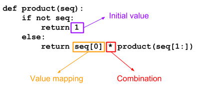

A "fold" is a fundamental primitive in defining operations on data structures; it's particularly important in functional languages where recursion is the default tool to express repetition. In this article I'll present how left and right folds work and how they map to some fundamental recursive patterns.
The article starts with Python, which should be (or at least look) familiar to most programmers. It then switches to Haskell for a discussion of more advanced topics like the connection between folding and laziness, as well as monoids.
Extracting a fundamental recursive pattern
Let's begin by defining a couple of straightforward functions in a recursive manner, in Python. First, computing the product of all the numbers in a given list:
def product(seq):
if not seq:
return 1
else:
return seq[0] * product(seq[1:])
Needless to say, we wouldn't really write this function recursively in Python; but if we were, this is probably how we'd write it.
Now another, slightly different, function. How do we double (multiply by 2) every element in a list, recursively?
def double(seq):
if not seq:
return []
else:
return [seq[0] * 2] + double(seq[1:])
Again, ignoring the fact that Python has much better ways to do this (list comprehensions, for example), this is a straightforward recursive pattern that experienced programmers can produce in their sleep.
In fact, there's a lot in common between these two implementation. Let's try to find the commonalities.
As this diagram shows, the functions product and double are really only different in three places:
- The initial value produced when the input sequence is empty.
- The mapping applied to every sequence value processed.
- The combination of the mapped sequence value with the rest of the sequence.
For product:
- The initial value is 1.
- The mapping is identity (each sequence element just keeps its value, without change).
- The combination is the multiplication operator.
Can you figure out the same classification for double? Take a few moments to try for yourself. Here it is:
- The initial value is the empty list [].
- The mapping takes a value, multiplies it by 2 and puts it into a list. We could express this in Python as lambda x: [x * 2].
- The combination is the list concatenation operator +.
With the diagram above and these examples, it's straightforward to write a generalized "recursive transform" function that can be used to implement both product and double:
def transform(init, mapping, combination, seq):
if not seq:
return init
else:
return combination(mapping(seq[0]),
transform(init, mapping, combination, seq[1:]))
The transform function is parameterized with init - the initial value, mapping- a mapping function applied to every sequence value, and combination - the combination of the mapped sequence value with the rest of the sequence. With these given, it implements the actual recursive traversal of the list.
Here's how we'd write product in terms of transform:
def product_with_transform(seq):
return transform(1, lambda x: x, lambda a, b: a * b, seq)
And double:
def double_with_transform(seq):
return transform([], lambda x: [x * 2], lambda a, b: a + b, seq)
foldr - fold right
Generalizations like transform make functional programming fun and powerful, since they let us express complex ideas with the help of relatively few building blocks. Let's take this idea further, by generalizing transform even more. The main insight guiding us is that the mapping and the combination don't even have to be separate functions. A single function can play both roles.
In the definition of transform, combination is applied to:
- The result of calling mapping on the current sequence value.
- The recursive application of the transformation to the rest of the sequence.
We can encapsulate both in a function we call the "reduction function". This reduction function takes two arguments: the current sequence value (item), and the result of applying the full transfromation to the rest of the sequence. The driving transformation that uses this reduction function is called "a right fold" (or foldr):
def foldr(func, init, seq):
if not seq:
return init
else:
return func(seq[0], foldr(func, init, seq[1:]))
We'll get to why this is called "fold" shortly; first, let's convince ourselves it really works. Here's product implemented using foldr:
def product_with_foldr(seq):
return foldr(lambda seqval, acc: seqval * acc, 1, seq)
The key here is the func argument. In the case of product, it "reduces" the current sequence value with the "accumulator" (the result of the overall transformation invoked on the rest of the sequence) by multiplying them together. The overall result is a product of all the elements in the list.
Let's trace the calls to see the recursion pattern. I'll be using the tracing technique described in this post. For this purpose I hoisted the reducing function into a standalone function called product_reducer:
def product_reducer(seqval, acc):
return seqval * acc
def product_with_foldr(seq):
return foldr(product_reducer, 1, seq)
The full code for this experiment is available here. Here's the tracing of invoking product_with_foldr([2, 4, 6, 8]):
product_with_foldr([2, 4, 6, 8])
foldr(<function product_reducer at 0x7f3415145ae8>, 1, [2, 4, 6, 8])
foldr(<function product_reducer at 0x7f3415145ae8>, 1, [4, 6, 8])
foldr(<function product_reducer at 0x7f3415145ae8>, 1, [6, 8])
foldr(<function product_reducer at 0x7f3415145ae8>, 1, [8])
foldr(<function product_reducer at 0x7f3415145ae8>, 1, [])
--> 1
product_reducer(8, 1)
--> 8
--> 8
product_reducer(6, 8)
--> 48
--> 48
product_reducer(4, 48)
--> 192
--> 192
product_reducer(2, 192)
--> 384
--> 384
The recursion first builds a full stack of calls for every element in the sequence, until the base case (empty list) is reached. Then the calls to product_reducer start executing. The first reduces 8 (the last element in the list) with 1 (the result of the base case). The second reduces this result with 6 (the second-to-last element in the list), and so on until we reach the final result.
Since foldr is just a generic traversal pattern, we can say that the real work here happens in the reducers. If we build a tree of invocations of product_reducer, we get:
And this is why it's called the right fold. It takes the rightmost element and combines it with init. Then it takes the result and combines it with the second rightmost element, and so on until the first element is reached.
More general operations with foldr
We've seen how foldr can implement all kinds of functions on lists by encapsulating a fundamental recursive pattern. Let's see a couple more examples. The function double shown above is just a special case of the functional map primitive:
def map(mapf, seq):
if not seq:
return []
else:
return [mapf(seq[0])] + map(mapf, seq[1:])
Instead of applying a hardcoded "multiply by 2" function to each element in the sequence, map applies a user-provided unary function. Here's map implemented in terms of foldr:
def map_with_foldr(mapf, seq):
return foldr(lambda seqval, acc: [mapf(seqval)] + acc, [], seq)
Another functional primitive that we can implement with foldr is filter. This one is just a bit trickier because we sometimes want to "skip" a value based on what the filtering predicate returns:
def filter(predicate, seq):
if not seq:
return []
else:
maybeitem = [seq[0]] if predicate(seq[0]) else []
return maybeitem + filter(predicate, seq[1:])
Feel free to try to rewrite it with foldr as an exercise before looking at the code below. We just follow the same pattern:
def filter_with_foldr(predicate, seq):
def reducer(seqval, acc):
if predicate(seqval):
return [seqval] + acc
else:
return acc
return foldr(reducer, [], seq)
We can also represent less "linear" operations with foldr. For example, here's a function to reverse a sequence:
def reverse_with_foldr(seq):
return foldr(lambda seqval, acc: acc + [seqval], [], seq)
Note how similar it is to map_with_foldr; only the order of concatenation is flipped.
Left-associative operations and foldl
Let's probe at some of the apparent limitations of foldr. We've seen how it can be used to easily compute the product of numbers in a sequence. What about a ratio? For the list [3, 2, 2] the ratio is "3 divided by 2, divided by 2", or 0.75 [1].
If we take product_with_foldr from above and replace * by /, we get:
>>> foldr(lambda seqval, acc: seqval / acc, 1, [3, 2, 2])
3.0
What gives? The problem here is the associativity of the operator /. Take another look at the call tree diagram shown above. It's obvious this diagram represents a right-associative evaluation. In other words, what our attempt at a ratio did is compute 3 / (2 / 2), which is indeed 3.0; instead, what we'd like is (3 / 2) / 2. But foldr is fundamentally folding the expression from the right. This works well for associative operations like + or * (operations that don't care about the order in which they are applied to a sequence), and also for right-associative operations like exponentiation, but it doesn't work that well for left-associative operations like / or -.
This is where the left fold comes in. It does precisely what you'd expect - folds a sequence from the left, rather than from the right. I'm going to leave the division operation for later [2] and use another example of a left-associative operation: converting a sequence of digits into a number. For example [2, 3] represents 23, [3, 4, 5, 6] represents 3456, etc. (a related problem which is more common in introductory programming is converting a string that contains a number into an integer).
The basic reducing operation we'll use here is: acc * 10 + sequence value. To get 3456 from [3, 4, 5, 6] we'll compute:
(((((3 * 10) + 4) * 10) + 5) * 10) + 6
Note how this operation is left-associative. Reorganizing the parens to a rightmost-first evaluation would give us a completely different result.
Without further ado, here's the left fold:
def foldl(func, init, seq):
if not seq:
return init
else:
return foldl(func, func(init, seq[0]), seq[1:])
Note that the order of calls between the recursive call to itself and the call to func is reversed vs. foldr. This is also why it's customary to put acc first and seqval second in the reducing functions passed to foldl.
If we perform multiplication with foldl:
def product_with_foldl(seq):
return foldl(lambda acc, seqval: acc * seqval, 1, seq)
We'll get this trace:
product_with_foldl([2, 4, 6, 8])
foldl(<function product_reducer at 0x7f2924cbdc80>, 1, [2, 4, 6, 8])
product_reducer(1, 2)
--> 2
foldl(<function product_reducer at 0x7f2924cbdc80>, 2, [4, 6, 8])
product_reducer(2, 4)
--> 8
foldl(<function product_reducer at 0x7f2924cbdc80>, 8, [6, 8])
product_reducer(8, 6)
--> 48
foldl(<function product_reducer at 0x7f2924cbdc80>, 48, [8])
product_reducer(48, 8)
--> 384
foldl(<function product_reducer at 0x7f2924cbdc80>, 384, [])
--> 384
--> 384
--> 384
--> 384
--> 384
Contrary to the right fold, the reduction function here is called immediately for each recursive step, rather than waiting for the recursion to reach the end of the sequence first. Let's draw the call graph to make the folding-from-the-left obvious:
Now, to implement the digits-to-a-number function task described earlier, we'll write:
def digits2num_with_foldl(seq):
return foldl(lambda acc, seqval: acc * 10 + seqval, 0, seq)
Stepping it up a notch - function composition with foldr
Since we're looking at functional programming primitives, it's only natural to consider how to put higher order functions to more use in combination with folds. Let's see how to express function composition; the input is a sequence of unary functions: [f, g, h] and the output is a single function that implements f(g(h(...))). Note this operation is right-associative, so it's a natural candidate for foldr:
identity = lambda x: x
def fcompose_with_foldr(fseq):
return foldr(lambda seqval, acc: lambda x: seqval(acc(x)), identity, fseq)
In this case seqval and acc are both functions. Each step in the fold consumes a new function from the sequence and composes it on top of the accumulator (which is the function composed so far). The initial value for this fold has to be the identity for the composition operation, which just happens to be the identity function.
>>> f = fcompose_with_foldr([lambda x: x+1, lambda x: x*7, lambda x: -x])
>>> f(8)
-55
Let's take this trick one step farther. Recall how I said foldr is limited to right-associative operations? Well, I lied a little. While it's true that the fundamental recursive pattern expressed by foldr is right-associative, we can use the function composition trick to evaluate some operation on a sequence in a left-associative way. Here's the digits-to-a-number function with foldr:
def digits2num_with_foldr(seq):
composed = foldr(
lambda seqval, acc: lambda n: acc(n * 10 + seqval),
identity,
seq)
return composed(0)
To understand what's going on, manually trace the invocation of this function on some simple sequence like [1, 2, 3]. The key to this approach is to recall that foldr gets to the end of the list before it actually starts applying the function it folds. The following is a careful trace of what happens, with the folded function replaced by g for clarify.
digits2num_with_foldl([1, 2, 3])
-> foldr(g, identity, [1, 2, 3])
-> g(1, foldr(g, identity, [2, 3]))
-> g(1, g(2, foldr(g, identity, [3])))
-> g(1, g(2, g(3, foldr(g, identity, []))))
-> g(1, g(2, g(3, identity)))
-> g(1, g(2, lambda n: identity(n * 10 + 3)))
Now things become a bit trickier to track because of the different anonymous functions and their bound variables. It helps to give these function names.
<f1 = lambda n: identity(n * 10 + 3)>
-> g(1, g(2, f1))
-> g(1, lambda n: f1(n * 10 + 2))
<f2 = lambda n: f1(n * 10 + 2)>
-> g(1, f2)
-> lambda n: f2(n * 10 + 1)
Finally, we invoke this returned function on 0:
f2(0 * 10 + 1)
-> f1(1 * 10 + 2)
-> identity(12 * 10 + 3)
-> 123
In other words, the actual computation passed to that final identity is:
((1 * 10) + 2) * 10 + 3
Which is the left-associative application of the folded function.
Expressing foldl with foldr
After the last example, it's not very surprising that we can take this approach to its logical conclusion and express the general foldl by using foldr. It's just a generalization of digits2num_with_foldr:
def foldl_with_foldr(func, init, seq):
composed = foldr(
lambda seqval, acc: lambda n: acc(func(n, seqval)),
identity,
seq)
return composed(init)
In fact, the pattern expressed by foldr is very close to what is called primitive recursion by Stephen Kleene in his 1952 book Introduction to Metamathematics. In other words, foldr can be used to express a wide range of recursive patterns. I won't get into the theory here, but Graham Hutton's article A tutorial on the universality and expressiveness of fold is a good read.
foldr and foldl in Haskell
Now I'll switch gears a bit and talk about Haskell. Writing transformations with folds is not really Pythonic, but it's very much the default Haskell style. In Haskell recursion is the way to iterate.
Haskell is a lazily evaluated language, which makes the discussion of folds a bit more interesting. While this behavior isn't hard to emulate in Python, the Haskell code dealing with folds on lazy sequences is pleasantly concise and clear.
Let's starts by implementing product and double - the functions this article started with. Here's the function computing a product of a sequence of numbers:
myproduct [] = 1
myproduct (x:xs) = x * myproduct xs
And a sample invocation:
*Main> myproduct [2,4,6,8]
384
The function doubling every element in a sequence:
mydouble [] = []
mydouble (x:xs) = [2 * x] ++ mydouble xs
Sample invocation:
*Main> mydouble [2,4,6,8]
[4,8,12,16]
IMHO, the Haskell variants of these functions make it very obvious that a right-fold recursive pattern is in play. The pattern matching idiom of (x:xs) on sequences splits the "head" from the "tail" of the sequence, and the combining function is applied between the head and the result of the transformation on the tail. Here's foldr in Haskell, with a type declaration that should help clarify what goes where:
myfoldr :: (b -> a -> a) -> a -> [b] -> a
myfoldr _ z [] = z
myfoldr f z (x:xs) = f x (myfoldr f z xs)
If you're not familiar with Haskell this code may look foreign, but it's really a one-to-one mapping of the Python code for foldr, using some Haskell idioms like pattern matching.
These are the product and doubling functions implemented with myfoldr, using currying to avoid specifying the last parameter:
myproductWithFoldr = myfoldr (*) 1
mydoubleWithFoldr = myfoldr (\x acc -> [2 * x] ++ acc) []
Haskell also has a built-in foldl which performs the left fold. Here's how we could write our own:
myfoldl :: (a -> b -> a) -> a -> [b] -> a
myfoldl _ z [] = z
myfoldl f z (x:xs) = myfoldl f (f z x) xs
And this is how we'd write the left-associative function to convert a sequence of digits into a number using this left fold:
digitsToNumWithFoldl = myfoldl (\acc x -> acc * 10 + x) 0
Folds, laziness and infinite lists
Haskell evaluates all expressions lazily by default, which can be either a blessing or a curse for folds, depending on what we need to do exactly. Let's start by looking at the cool applications of laziness with foldr.
Given infinite lists (yes, Haskell easily supports infinite lists because of laziness), it's fairly easy to run short-circuiting algorithms on them with foldr. By short-circuiting I mean an algorithm that terminates the recursion at some point throughout the list, based on a condition.
As a silly but educational example, consider doubling every element in a sequence but only until a 5 is encountered, at which point we stop:
> foldr (\x acc -> if x == 5 then [] else [2 * x] ++ acc) [] [1,2,3,4,5,6,7]
[2,4,6,8]
Now let's try the same on an infinite list:
> foldr (\x acc -> if x == 5 then [] else [2 * x] ++ acc) [] [1..]
[2,4,6,8]
It terminates and returns the right answer! Even though our earlier stack trace of folding makes it appear like we iterate all the way to the end of the input list, this is not the case for our folding function. Since the folding function doesn't use acc when x == 5, Haskell won't evaluate the recursive fold further [3].
The same trick will not work with foldl, since foldl is not lazy in its second argument. Because of this, Haskell programmers are usually pointed to foldl', the eager version of foldl, as the better option. foldl' evaluates its arguments eagerly, meaning that:
- It won't support infinite sequences (but neither does foldl!)
- It's significantly more efficient than foldl because it can be easily turned into a loop (note that the recursion in foldl is a tail call, and the eager foldl' doesn't have to build a thunk of increasing size due to laziness in the first argument).
There is also an eager version of the right fold - foldr', which can be more efficient than foldr in some cases; it's not in Prelude but can be imported from Data.Foldable [4].
Folding vs. reducing
Our earlier discussion of folds may have reminded you of the reduce built-in function, which seems to be doing something similar. In fact, Python's reduce implements the left fold where the first element in the sequence is used as the zero value. One nice property of reduce is that it doesn't require an explicit zero value (though it does support it via an optional parameter - this can be useful when the sequence is empty, for example).
Haskell has its own variations of folds that implement reduce - they have the digit 1 as suffix: foldl1 is the more direct equivalent of Python's reduce - it doesn't need an initializer and folds the sequence from the left. foldr1 is similar, but folds from the right. Both have eager variants: foldl1' and foldr1'.
I promised to revisit calculating the ratio of a sequence; here's a way, in Haskell:
myratioWithFoldl = foldl1 (/)
The problem with using a regular foldl is that there's no natural identity value to use on the leftmost side of a ratio (on the rightmost side 1 works, but the associativity is wrong). This is not an issue for foldl1, which starts the recursion with the first item in the sequence, rather than an explicit initial value.
*Main> myratioWithFoldl [3,2,2]
0.75
Note that foldl1 will throw an exception if the given sequence is empty, since it needs at least one item in there.
Folding arbitrary data structures
The built-in folds in Haskell are defined on lists. However, lists are not the only data structure we should be able to fold. Why can't we fold maps (say, summing up all the keys), or even custom data structures? What is the minimum amount of abstraction we can extract to enable folding?
Let's start by defining a simple binary tree data structure:
data Tree a = Empty | Leaf a | Node a (Tree a) (Tree a)
deriving Show
-- A sample tree with a few nodes
t1 = Node 10 (Node 20 (Leaf 4) (Leaf 6)) (Leaf 7)
Suppose we want to fold the tree with (+), summing up all the values contained within it. How do we go about it? foldr or foldl won't cut it here - they expect [a], not Tree a. We could try to write our own foldr:
foldTree :: (b -> a -> a) -> a -> Tree b -> a
foldTree _ z Empty = z
foldTree f z (Leaf x) = ??
foldTree f (Node x left right) = ??
There's a problem, however. Since we want to support an arbitrary folding result, we're not quite sure what to substitute for the ??s in the code above. In foldr, the folding function takes the accumulator and the next value in the sequence, but for trees it's not so simple. We may encounter a single leaf, and we may encounter several values to summarize; for the latter we have to invoke f on x as well as on the result of folding left and right. So it's not clear what the type of f should be - (b -> a -> a) doesn't appear to work [5].
A useful Haskell abstraction that can help us solve this problem is Monoid. A monoid is any data type that has an identity element (called mempty) and an associative binary operation called mappend. Monoids are, therefore, amenable to "summarization".
foldTree :: Monoid a => (b -> a) -> Tree b -> a
foldTree _ Empty = mempty
foldTree f (Leaf x) = f x
foldTree f (Node x left right) = (foldTree f left) <> f x <> (foldTree f right)
We no longer need to pass in an explicit zero element: since a is a Monoid, we have its mempty. Also, we can now apply a single (b -> a) function onto every element in the tree, and combine the results together into a summary using a's mappend (<> is the infix synonym of mappend).
The challenge of using foldTree is that we now actually need to use a unary function that returns a Monoid. Luckily, Haskell has some useful built-in monoids. For example, Data.Monoid.Sum wraps numbers into monoids under addition. We can find the sum of all elements in our tree t1 using foldTree and Sum:
> foldrTree Sum t1
Sum {getSum = 47}
Similarly, Data.Monoid.Product wraps numbers into monoids under multiplication:
> foldrTree Product t1
Product {getProduct = 33600}
Haskell provides a built-in typeclass named Data.Foldable that only requires us to implement a similar mapping function, and then takes care of defining many folding methods. Here's the instance for our tree:
instance Foldable Tree where
foldMap f Empty = mempty
foldMap f (Leaf x) = f x
foldMap f (Node x left right) = foldMap f left <> f x <> foldMap f right
And we'll automatically have foldr, foldl and other folding methods available on Tree objects:
> Data.Foldable.foldr (+) 0 t1
47
Note that we can pass a regular binary (+) here; Data.Foldable employs a bit of magic to turn this into a properly monadic operation. We get many more useful methods on trees just from implementing foldMap:
> Data.Foldable.toList t1
[4,20,6,10,7]
> Data.Foldable.elem 6 t1
True
It's possible that for some special data structure these methods can be implemented more efficiently than by inference from foldMap, but nothing is stopping us from redefining specific methods in our Foldable instance. It's pretty cool, however, to see just how much functionality can be derived from having a single mapping method (and the Monoid guarantees) defined. See the documentation of Data.Foldable for more details.
| [1] | Note that I'm using Python 3 for all the code in this article; hence, Python 3's division semantics apply. |
| [2] | Division has a problem with not having a natural "zero" element; therefore, it's more suitable for foldl1 and reduce, which are described later on. |
| [3] | I'm prefixing most functions here with my since they have Haskell standard library builtin equivalents; while it's possible to avoid the name clashes with some import tricks, custom names are the least-effort approach, also for copy-pasting these code snippets into a REPL. |
| [4] | I realize this is a very rudimentary explanation of Haskell laziness, but going deeper is really out of scope of this article. There are plenty of resources online to read about lazy vs. eager evaluation, if you're interested. |
| [5] | We could try to apply f between the leaf value and z, but it's not clear in what order this should be done (what if f is sensitive to order?). Similarly for a Node, since there are no guarantees on the associativity of f, it's hard to predict what is the right way of applying it multiple times. |